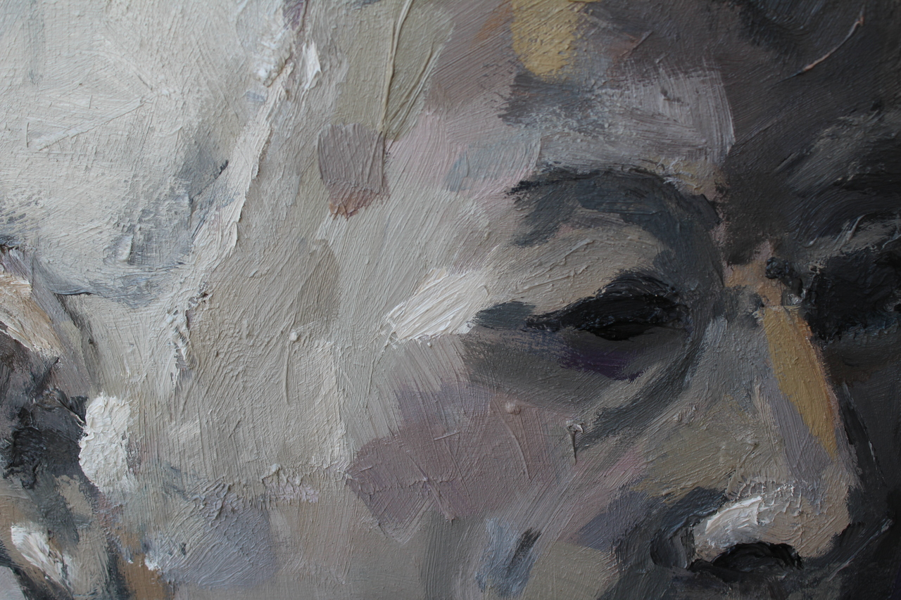

Artes Plásticas
Fine Arts
Técnica
Pintura y dibujo
Painting and drawing
Descripción
Recopilacion de obras plásticas desde 2015 hasta la actualidad
Collection of works of art from 2015 to the present day
Ver obras

Modelado 3D
3D Modelling
Técnica
Blender, Substance y Unity
Descripción
Recopilación de modelados en 3D de distintas temáticas
Compilation of 3D modelling of different themes
Ver obras

Entornos Virtuales Interactivos
Interactive Virtual Environments
Técnica
Blender, Unity y Unreal Engine
Descripción
Recopilación de entornos virtuales en varios motores de videojuegos
Compilation of virtual environments in several videogame engines
Ver obras

Web, Video y Transmedia
Web, Video and Transmedia
Técnica
HTML, CSS y JavaScript
Descripción
Recopilación de proyectos en el entorno web o de caracter transmedia
Compilation of projects in the web or transmedia field
Ver webs